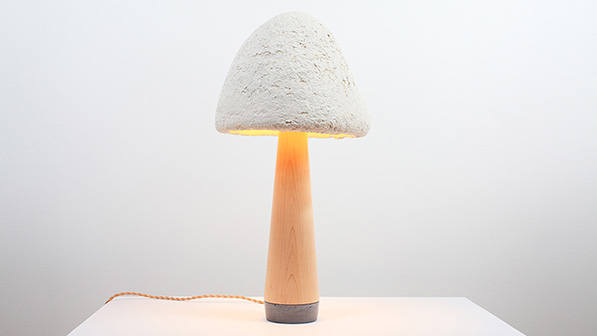
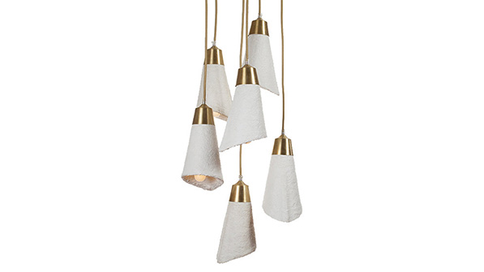

Lighting
With Ecovative’s materials, if you can design it, we can grow it. Ecovative offers designers complete creativity through the Grow It Yourself material: up to and including lighting. Danielle Trofe’s MushLume lamps are fully available to consumers, and helped launch Ecovative’s Grow It Yourself program: demonstrating the versatility and creative capacity of Ecovative’s proprietary materials.

Danielle Trofe uses GIY to create her line of MushLume lights. Shown above is the MushLume Table Lamp.

Danielle Trofe uses GIY to create her line of MushLume lights. Shown above is the MushLume Cascade Chandy.

Danielle Trofe uses GIY to create her line of MushLume lights. Shown above is the MushLume Hemi Pendant.